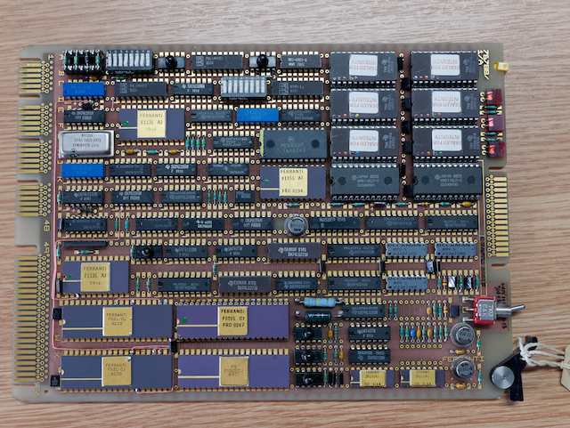

The Ferranti F100-L Microprocessor¶
The Ferranti F100-L was the first European designed and manufactured 16-bit microprocessor[1].
Launched in 1976, the F100-L was designed by Ferranti Computer Systems Ltd in their Bracknell, UK design centre. The chips were then fabricated in Ferranti Electronics Ltd’s Gem Mill works in Manchester.
The F100-L project started in the early 1970s with the intention of creating complete microprocessor based solutions for military applications as well as serving the needs of various Ferranti divisons.[5] The military requirement included the ability to operate over a wide temperature range of -55C to +125C and to be resistant to the effects of radiation. The 16 bit word size was chosen as the system was seen to be a way of downsizing existing applications running using mini-computers and software.
As well as being one of the first of the 16 bit processors the F100-L was unusual in that it was designed using a bipolar technology when other manufacturers had already turned to planar MOS processes to improve component densities. The choice of bipolar technology was driven by the radiation hardness requirement and eventually it was shown that the F100-L was almost totally latch-up resistant even after significant doses of radiation.[11] Ferranti were already technology leaders in the fabrication and application of bipolar design for both linear and logical applications through their Common Diffusion Isolation (CDI) process.
F100-L Family Support Chips¶
Although the F100-L was a self-contained microprocessor, it was always intended to be part of a chip set. By the time the CPU was in production in 1977 two only two of these companion chips were available, the F111 and F112. Additional family members were added starting with the F113, F114 and ZN1001 in 1978.[16]
Part No |
Function |
Pkg |
ZN1001 |
Clock Generator a general purpose oscillator requiring a crystal to define the clock rate and an RC network to define pulse width. |
DIP16 |
F101-L |
Single chip co-processor implementing 2’s complement multipy and divide functions, performing a 16 bit multiply in around 8uS and a division in around 10uS [5] |
DIP40 |
F111-L |
Control interface chip, usually sold together with the F112-L to handle all system interfacing including DMA channel control. |
DIP40 |
F112-L |
Data interface chip used to connect any system device to the IO bus. |
DIP40 |
F113-L |
High speed memory interface providing all necessary control signals for ROM and RAM handling with no requirement for additional ‘glue’. The F113 provided the highest speed memory access for circuits implemented with TTL technologies and dissipated around 350mW[5]. |
DIP24 |
F114-L |
Medium speed, lower power memory interface with similar features to the F113-L above. This part was more suitable for battery operation with reduced performance but also a reduced power draw of just 25mW[5]. |
DIP24 |
F115-L |
Real Time Interrupt handler, can be used with an external crystal to generate real time interrupt at one of 15 rates selectable by hardware or software control. An external device and also generate interrupts using the F115 logic. |
DIP24 |
F117-L |
Two channel interrupt controller provides full vectored interrupt capability for two external devices connected to an F100-L system. |
DIP24 |
F118-L |
Serial Interface Master Chip - implements a serial bus in which up to 16 F119-L slaves can be connected to a single master. Up to 4 F118-L ICs can be connected to an F100-L to create 4 separate serial busses. |
DIP40 |
F119-L |
Serial Interface Slave Chip - provides an interface for one or two peripherals onto the F100-L serial bus. |
DIP28 |
The chip sets were designed to allow F100-L systems to be constructed with a minimum of glue logic. Like the F100-L the rest of the chipset also needed to be radiation hard, and so was also built in CDI technology. Unlike the processor however, a good number of the the support chips were implemented as gate arrays. For example the F111, F112, F113 and F115 are all implemented on 2000 series ULAs.
The most common combination of chips was also available as a multi-chip-module. This thick film module was sold as the FBH5092 and packaged up an F100-L, F101-L, clock generator and two F112-L data interfaces onto a leadless ceramic chip carrier which in turn was bonded to the lead frame of a ceramic 64 pin package.
Pricing and Commercial History¶
At the launch in 1976 the CPU alone was priced at 57UKP in quantities of 100 [1,3], and available in the following speed and operating condition ranges.
Operating Condition |
Operating Temperature Range |
Clock Frequency |
Commercial |
0C - +70C |
8 MHz |
Industrial |
-25C - +80C |
6.5 MHz |
Military |
-55C - +125C |
3MHz, 5MHz |
Later versions were able to run at up to 20MHz.
By 1978 prices had reduced somewhat to 39UKP for the processor, with a support chip set of an F111-L and 2 F112-L’s available for an additional 18KUP.[4] The table below shows costs for a selection of microprocessors available in 1978[15]
Manufacturer |
Chip Number |
Datapath/ Address bus Width |
Cost (Qty of 100) |
|
Mil Spec |
Commercial |
|||
Ferranti |
F100-L |
16/15 |
$78 |
$78 |
Texas Instruments |
SBP9900NJ |
16/15 |
$425 |
$71 |
Intersil |
IMS6100 |
12/12 |
$53 |
$15 |
Zilog |
Z80 |
8/16 |
$165 |
$25 |
Motorola |
MC6800 |
8/16 |
$76 |
$18 |
MOS Technology |
MCS6502 |
8/16 |
N/A |
$11 |
Intel |
MCS8080A |
8/16 |
$32 |
$13 |
Nat. Semiconductor |
SC/MP |
8/12 |
N/A |
$9 |
Advaned Micro. Devices |
Am2901A |
4/design. dependent |
$71 |
$15 |
The F100-L represented good value for a military spec part but was less competitive with parts from other manufacturers designed and packaged for less rigorous commercial requirements. This made the F100-L less attractive for use in the nascent personal computer market created by the 8 bit processors. Additionally many of these 8 bit processors actually provided 16 bit addressing and even some 16 bit (double word) data processing. The Zilog Z80 is a good example of this with a number of internal registers which can be paired to perform 16 bit operations. Continuing this comparison, by 1979 it was estimated that only 5000 F100-L parts had been manufactured in total[6]. Zilog on the other hand sold 100,000 Z80s into Tandy in 1978 alone for inclusion in their Tandy TRS-80 computer[7].
Although no other third party commercial computer offerings were based on this CPU, Ferranti didn’t miss out completely on the home and personal computer boom: their dominant position as a provider of semi-custom ICs using their ULA technology made them the first choice for many manufacturers in cost reducing their own designs. Ferranti ULAs powered many of the largest selling European machines, including most of those from Sinclair and Acorn.
Ferranti made and sold their own computer system based around the F100-L. This went on sale in 1980 at a single unit cost of 5800UKP for a system with two floppy drives[13]. The Science Museum has a photograph of this system being used in City University, London:
Selling into its originally intended military markets the F100-L appears to have had some longevity and even spawned a successor in 1984 - the F200-L.[14,18] The F200-L was fully software compatible with the original F100-L, and supplied in the same 40 pin DIL package. The main logical changes in the F200 were the integration of the multiplier unit onto the die or at least into the same package, and an additional address bit to bring the directly addressable memory area up to 64K words. This address range could be expanded to 1M words when combined with the F220 Memory Management Unit IC introduced at the same time, via a paging scheme combining a fixed 32K word lower page and a swappable upper 32K. [19] The newer F200 and F220 were both available in commercial, industrial and military grades matching the original family members.
Not long after the introduction of the F200 chips, Ferranti acquired the American technology company International Signal and Control in 1987. Unfortunately for Ferranti the state of ISC had been presented fraudulently and the completion of the deal caused Ferranti to collapse owing to the hidden debts of its new subsidiary. Ferranti was broken up and their chip business was sold to Plessey for £30M[2]. At that time both F200 and F100, as well as the ULA business, were listed as noteworthy assets. Plessey (later merged with GEC to form GPT) were still building some number of F200’s in 1992, and support chips including the F113 as late as 1995.
Applications¶
Although little information is publicly available on Ferranti turn-key systems for military applications, three stand out as having generated sufficient demand to keep the processor and support chips in production from the original 1976 launch right up into the mid 1990s.
The BAe Sea Eagle Missile System [25]
Sea Eagle was an air-launched anti-ship missile originally introduced in 1981 and used in the UK Armed Forces until the late 1990s, and still in use in the Indian Navy as late as 2009. [36]
The F100-L provides the on-board digital flight computer controlling the flight path of the missile until the target is acquired by the radar homing head during the final sea skimming phase of an attack. An upgrade program was abandoned on cost grounds in the mid 1990s so it’s possible that the F100-L saw out the entire Sea Eagle lifespan.
The Ferranti Falcon Integrated Fire Control System (IFCS) for tanks and AFVs
“The Ferranti Falcon Fire Control System is a digital system based on the F100-L Microprocessor providing a versatile and cost-effective means of enhancing the combat capability of gun-aimed fighting vehicles. Compact Dimensions, simplicity of operation and low cost enusre the Falcon application is not restricted to main battle tanks.”
– Janes Weapon Systems, 1985/86 [26]
The Ferranti Falcon system may originally have been developed for the MBT-80 tank, intended as a British Chieftain replacement, but the MBT-80 project itself was abandoned in 1980[32a]. Whatever its origins, the Ferranti Falcon system itself continued into production and was offered as an option for Chieftain 900 tanks [32b], and was used on the Brazilian MB-3 Tamoyo tanks [33].
A gun control predictor for smaller calibre Naval cannon, possibly related to the Ferranti Falcon, was also offered and adopted at least by the Brazilian navy.
The Naval CACS-1, Computer Assisted Command System, and later CAAIS 450, Computer Aided Action Information System.
Both of these systems used Ferranti F100-L powered terminals to support multi-processor Ferranti FM1600 and Argus M700 computer systems.
“CAAIS 450 is a distributed processing system using the FM1600E computer and Coral 66 software language. It operates at 650 kips and has a memory of 1.2 million words. It is designed to fit a wide range of warships down to fast attack craft size and to interface with a fire-control system. The system also uses new consoles each with its own computer, core, Dragon display drive (using Ferranti F100L microprocessors) and input/output devices. There are two types of display system; two-operator and single-operator, and a typical configuration would be three two-man consoles. These may be supplemented by one two-man or two one-man consoles, the latter being either joined or autonomous.”
– Janes Naval Systems, No. 25, [27]
The CACS-1 system was widely adopted in Royal Navy vessels, including in Type 22 frigates. The CAAIS was also used by the Navy in Hunt Class minesweepers, but also offered for export and used in Brazilian Navy Inhaúma class ships. [27]
The F100-L was the also subject of a number of application studies and trials although it’s not clear how many of these resulted in sales of more than sample quantities.
The highest profile application was the F100-L’s inclusion in the University of Surrey’s UoSAT program, where the F100-L was the heart of the secondary computer unit launched into space. [9,11]
Other applications and research projects include
Engine management control
Ultra Electronic Controls Ltd. announced an engine management system in 1979[21], and later published technical papers [22,23]
Dowty Group displayed an F100-L digital speed and temperature limiter at the Farnborough Airshow in 1978 [24]
Proceedings of the ASME include another research paper on Helicopter Engine Management control [17]
A standard spacecraft compute module was offered by the British Aerospace Space and Communications Division [28]
several papers have been published on control of nuclear test equipment using the CAMAC protocol
medical instrumentation and monitoring [29]
application of micro processors in Air Traffic Control [30]
an RAE study into airframe stress monitoring using F100-L micro processor for data acquisition and management in flight prior to download for later analysis [34]
Silicon Implementation¶
Although the F100-L uses the same CDI technology as the company’s ULA, the CPU itself is a full-custom design. The die is approximately square, 5.8mm per side giving an area of 33.64sqmm. The die contains around 7000 individual components. [10] The following figure (recreated from a new die photograph but using Grundy’s original labelling) shows the main areas of the chip as described in the Architecture section later.

Preservation¶
Since the F100-L didn’t make it into any notable micro- or mini- computer systems, there are no significant displays of the hardware in any science or technology museums.
The Museum of Science and Industry (MOSI) in Manchester has a paperweight memento of a single packaged chip encased in perspex with the legend “F100-L the world’s most advanced 16 bit microprocessor.” MOSI also holds the Ferranti Archive, including company documents, sales and marketing materials relating to the product line.
The Centre for Computing History (CCH) in Cambridge has a couple of hardware artifacts but these are held in storage rather than on general display. Of the items they hold, the control handset from the F100-L microcomputer system is the most accessible. This unit has a complete instruction set summary table printed in the reverse and a transcript of that is included in the Appendices here.
As well as the the handset they also have a board, possibly from an Naval CACS or CAAIS F100-L computer system with F112-L and F101-L ICs.
